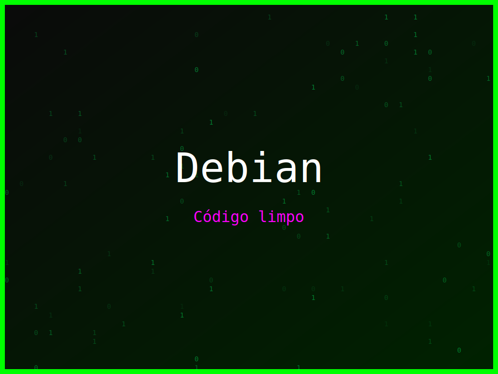

<section class="post-content">


    <div class="details-container">
       
        
        <ul class="details-list">
            <li><strong>Autor:</strong> piolinux</li>
            <li><strong>Descrição:</strong> Wallpaper Debian que exalta a paixão por código limpo e o poder de um SysAdmin.</li>
            <li><strong>Distro:</strong> Debian</li>
            <li><strong>Frases:</strong> Linux lovers, SysAdmin power, Código limpo</li>
            <li><strong>Tags:</strong> matrix, colorido</li>
        </ul>
        <a href="../galeria.html">Voltar para a galeria</a> ||
        <a href="../wallpaper42.svg" download="wallpaper-debian-o-coracao-do-codigo.svg">Baixar Wallpaper</a>
    </div>

</section>
